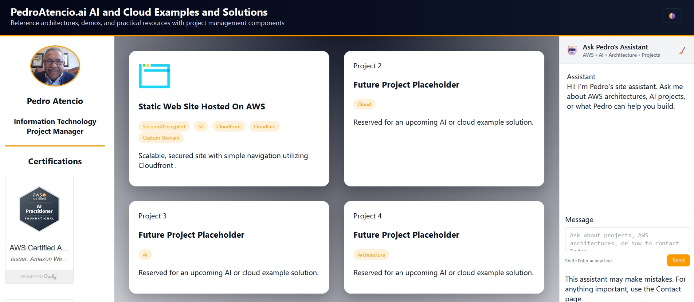
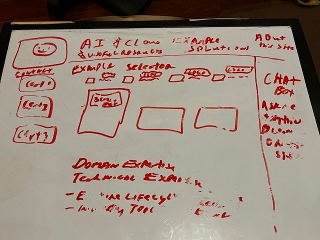
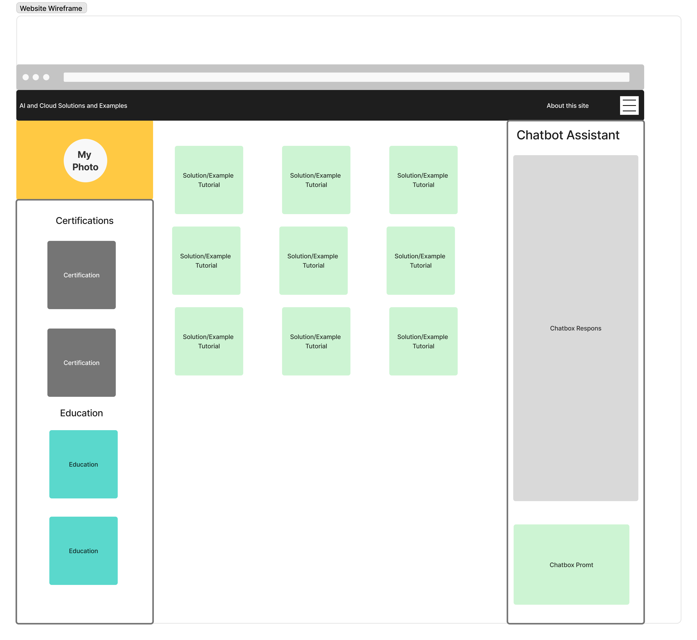
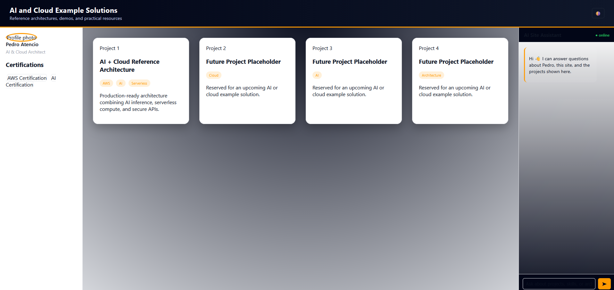
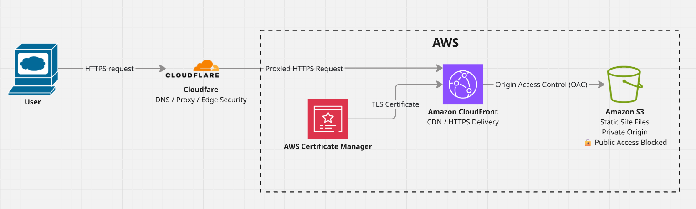

|
 |
|
||||


PedroAtencio.ai - Portfolio Web Site Hosted on AWS Cloud
Greetings!
Thanks for visiting my portfolio site. This page explains the purpose, design and how I went about creating it. I hope that you will find my site useful in learning about AI and the cloud. If you have any questions, feel free to contact me at Pedro@PedroAtencio.com
Project Overview
PedroAtencio.AI is a personal technology portfolio designed to demonstrate practical experience with artificial intelligence, cloud architecture, software development, and technology project management. Rather than functioning only as an online résumé, the site provides working examples, technical case studies, tutorials, architecture diagrams, and resources that visitors can explore.
A second objective is hands-on learning. Building and operating the site provides an environment where I can apply new AI and cloud concepts to a working solution, document what I learn, and continuously add new portfolio projects as my technical capabilities evolve.
The website itself became the first project in the portfolio. Its development demonstrates the complete project lifecycle—from defining requirements and developing an initial design through AI-assisted development, cloud architecture, AWS deployment, security configuration, testing, troubleshooting, and documentation.
Project at a Glance
| Project | PedroAtencio.AI Portfolio |
| Purpose | Interactive AI and cloud portfolio and learning platform |
| Role | Product Owner, Project Manager, Solution Designer, and Developer |
| Cloud Platform | Amazon Web Services (AWS) |
| Core Technologies | Amazon S3, Amazon CloudFront, AWS Certificate Manager (ACM), Cloudflare, HTML, CSS, JavaScript |
| Development & Design Tools | ChatGPT, Visual Studio Code, Figma |
| AI Contribution | Requirements refinement, content development, coding assistance, troubleshooting, and documentation |
| Delivery Architecture | Cloudflare → CloudFront → private Amazon S3 origin |
| Security | HTTPS/TLS, ACM, CloudFront Origin Access Control (OAC), S3 Block Public Access |
Requirements
The initial requirements focused on creating a professional portfolio that could grow as new projects and capabilities were added while remaining simple to operate and maintain.
Portfolio Content
The site must support multiple project case studies that demonstrate practical work in areas such as artificial intelligence, cloud architecture, software development, data, and technology project management. Projects should be able to include descriptions, diagrams, screenshots, tutorials, technical decisions, lessons learned, and links to additional resources.
AI Integration
The portfolio should demonstrate the practical use of artificial intelligence rather than simply describe AI technologies. The design therefore includes an AI-assistant experience and supports projects that demonstrate AI-assisted development and AI-enabled solutions.
Professional Profile
Visitors should be able to quickly access relevant professional information, including experience, certifications, education, technical interests, and contact information, without distracting from the project portfolio itself.
Responsive Design
The site must provide a usable experience across desktop and mobile browsers. Navigation, project content, professional information, and interactive components should adapt appropriately to different screen sizes.
Maintainability and Extensibility
The implementation should remain straightforward enough to maintain without a complex application framework. New projects, tutorials, images, and resources should be relatively easy to add as the portfolio expands.
Cost-Conscious Cloud Hosting
The site should use cloud services that provide secure and reliable delivery while avoiding unnecessary infrastructure and operating expense. The hosting architecture should also provide opportunities for hands-on experience with AWS services and cloud security.
Design
The design process focused on making the technology and project work the primary focus of the site. Visual elements were deliberately kept relatively simple so that architecture diagrams, project screenshots, technical explanations, and tutorials could carry most of the content.
The design was guided by a simple idea:
“I'm serious about AI and cloud technologies, I think in systems, and I care about clean execution.”
Simple Visual Design
The site uses a technology-oriented visual style without excessive animation or decorative elements. The goal is to create a professional environment in which visitors can quickly identify projects and then explore the technical details that interest them.
Dark and light themes provide visitors with a choice of viewing experience while maintaining a consistent layout and content hierarchy.
Three-Part Information Architecture
The desktop design divides the experience into three primary functional areas.
Professional Profile and Navigation provides access to professional information, certifications, education, navigation, and related portfolio resources.
Project Content is the primary workspace of the site. It presents portfolio projects and allows visitors to move from high-level project summaries into detailed case studies, architecture diagrams, implementation tutorials, screenshots, and lessons learned.
AI Assistant provides an interactive area designed to eventually allow visitors to ask questions about the portfolio, projects, technologies, and professional experience represented on the site.
This layout separates three different visitor needs—who I am, what I have built, and what a visitor wants to learn more about—without requiring separate experiences for each.
Responsive and Maintainable Implementation
The desktop layout establishes the full information architecture, but the design also needed to adapt to smaller screens where three simultaneous content areas would not be practical.
Responsive behavior therefore reorganizes the content for mobile devices while preserving access to professional information and project content.
The front-end implementation uses HTML, CSS, and JavaScript rather than a larger application framework. This keeps the site understandable and maintainable while providing sufficient flexibility for the current portfolio requirements.
From Concept to Design
I began with a whiteboard sketch to explore the site's information architecture without becoming distracted by implementation details. Once the basic layout and content areas were established, I translated the concept into a more structured Figma design.
The resulting design established the three primary areas of the site: professional information and navigation, project content, and an AI-assistant interface.
| Initial Home Page Design | |
| Draft Using Whiteboard | Draft Using Figma |
|
 |
 |
The comparison between the original sketch and the Figma design documents an important part of the project's development process: the solution evolved from an initial concept into a defined interface before becoming working software.
Site Development
AI-Generated Code
Because AI is a primary topic of the site, I decided to use Generative AI and tools integrated with AI for its development. I chose ChatGPT and Visual Studio Code as the primary development tools.
Portions of the website's code, written content, and technical documentation were generated or refined with assistance from generative AI. I defined the project objectives and requirements, directed the design and architecture, evaluated and iterated on AI-generated outputs, performed the AWS configuration and deployment, tested and troubleshot the implementation, and made the final project decisions.
Below is the initial prompt that I used to generate the code in ChatGPT
|
I want to have this tool generate code that I can later update in Visual Studio code and load to an Amazon S3 bucket. I have a design in mind. A banner at the top with the site heading: AI and Cloud Example Solutions and Useful Resources. There will be a frame on the left that will contain my photo and below the photo clickable images of certifications and other awards. The main body of the page will contain tiles for each of my sample projects. The tile will have a screenshot of the solution with a short textual description. On the right side will be a frame that will eventually display a chatbot window where people can prompt for information about me, the projects and content found on my site. The entire site must employ a responsive design to be functional in both, desktop and mobile browsers. |
Below is the initial home page generated by ChatGPT. ChatGPT generated .css, .js and sample images with their own folders.

Instructions: Hosting a Static Website on AWS
This tutorial describes how I deployed PedroAtencio.AI using Amazon S3, Amazon CloudFront, AWS Certificate Manager (ACM), and Cloudflare. The goal is a simple, secure architecture that provides a custom domain, HTTPS, global content delivery, and prevents direct public access to the S3 origin.

What You Will Need
- An AWS account
- A Cloudflare account
- A registered domain managed through Cloudflare DNS
- A completed static website (HTML, CSS, JavaScript, images, and other assets)
- Basic familiarity with the AWS Management Console
Step 1 — Create the Amazon S3 Bucket
In the AWS Management Console, open Amazon S3 and create a
general-purpose bucket for the website files. Select an AWS
Region appropriate for your project. PedroAtencio.AI uses US
East (Ohio), us-east-2.
Under Permissions → Block public access, enable all four Block Public Access settings. The production bucket also uses Bucket owner enforced, which disables ACLs so access is controlled through policies.
Step 2 — Upload the Website Files
Upload index.html and all CSS, JavaScript, images,
project pages, and other assets while preserving the directory
structure used during local development. The S3 bucket stores
the files, but it is not exposed as the public website.
Step 3 — Create the CloudFront Distribution
Open Amazon CloudFront and create a distribution using the S3
bucket as the origin. Set index.html as the default
root object and configure HTTPS and the desired cache behavior.
CloudFront will generate a domain such as
dxxxxxxxxxxxxx.cloudfront.net. Test this address
before configuring the custom domain; this isolates S3 and
CloudFront issues from DNS issues.
Step 4 — Secure the S3 Origin with CloudFront Origin Access Control (OAC)
Amazon S3 should not be publicly accessible in this architecture. CloudFront Origin Access Control (OAC) allows the CloudFront distribution to make authenticated requests to the private S3 origin while visitors access the site through the CloudFront delivery path.
In
CloudFront → Distribution → Origins,
configure the S3 origin to use an Origin Access Control. The S3
bucket policy then grants s3:GetObject permission
to the CloudFront service principal and restricts that
permission to the specific CloudFront distribution ARN. S3 Block
Public Access remains enabled, preventing visitors from
bypassing CloudFront and retrieving website files directly from
S3.
{
"Version": "2008-10-17",
"Id": "PolicyForCloudFrontPrivateContent",
"Statement": [
{
"Sid": "AllowCloudFrontServicePrincipal",
"Effect": "Allow",
"Principal": { "Service": "cloudfront.amazonaws.com" },
"Action": "s3:GetObject",
"Resource": "arn:aws:s3:::YOUR-BUCKET-NAME/*",
"Condition": {
"ArnLike": {
"AWS:SourceArn": "arn:aws:cloudfront::YOUR-AWS-ACCOUNT-ID:distribution/YOUR-DISTRIBUTION-ID"
}
}
}
]
}Replace the placeholders with your bucket name, AWS account ID, and CloudFront distribution ID. In the CloudFront Origins tab, verify that an Origin Access Control is assigned to the S3 origin. Then verify that the website works through CloudFront and try a direct S3 object URL. With the protected configuration, the direct request should return AccessDenied.
Step 5 — Request the ACM Certificate
To use a custom domain over HTTPS, request a public certificate
through AWS Certificate Manager.
For CloudFront, the certificate must be created in US East
(N. Virginia), us-east-1, regardless of the S3
bucket Region.
-
Change the AWS console Region to
us-east-1. - Open AWS Certificate Manager and request a public certificate.
-
Add the root domain and
wwwdomain, such asexample.comandwww.example.com. - Select DNS validation.
- Request the certificate.
Step 6 — Validate the Certificate with Cloudflare
ACM supplies CNAME records that prove domain ownership. In Cloudflare, open DNS → Records and add the CNAME validation records supplied by ACM. Return to ACM and wait for the certificate status to change from Pending validation to Issued.
Keep the ACM DNS-validation records. They are used for domain validation and support automatic certificate renewal; they are separate from the records that route website traffic to CloudFront.
Step 7 — Associate the Certificate and Domains with CloudFront
Edit the CloudFront distribution and add the root and
www hostnames as alternate domain names. Select the
issued ACM certificate from us-east-1, choose an
appropriate TLS security policy, save the changes, and wait for
the distribution to deploy. Both hostnames can use the same
CloudFront distribution and the same S3 origin.
Step 8 — Configure Cloudflare DNS
In Cloudflare DNS, configure both the root domain and the
www hostname to resolve to the CloudFront
distribution domain. This allows both public names to use one
CloudFront distribution and one S3 origin instead of maintaining
duplicate website content.
Step 9 — Configure Cloudflare SSL/TLS
Under Cloudflare → SSL/TLS, PedroAtencio.AI uses Full (strict) encryption. Review related settings such as Always Use HTTPS, TLS versions, TLS 1.3, HSTS, and Automatic HTTPS Rewrites. Avoid enabling competing redirect rules at multiple layers because they can create redirect loops.
Step 10 — Test the Complete Architecture
Use a private/incognito browser window and verify:
https://example.comloads securely.https://www.example.comloads securely.- A direct S3 object request returns AccessDenied.
- CSS, JavaScript, images, links, and project pages work.
- The layout works on desktop and mobile browsers.
Step 11 — Deploy Website Updates
The current deployment process is intentionally simple: make and test changes locally, upload the modified files through the S3 console, then create a CloudFront invalidation for the updated paths. After the invalidation completes, verify the production site. A future enhancement is to automate this process with source control and CI/CD.
Security Design
The S3 origin is intentionally private. All four S3 Block Public
Access controls are enabled, ACLs are disabled through Bucket
owner enforced, and CloudFront Origin Access Control (OAC) is
used to authenticate requests from the CloudFront distribution
to S3. The bucket policy permits s3:GetObject only
for the CloudFront service principal when the request originates
from the designated distribution ARN. Direct S3 object requests
return AccessDenied, while visitors can access
the same content through the CloudFront delivery path. HTTPS is
provided through ACM, CloudFront, and Cloudflare.
Troubleshooting and Lessons Learned
Certificate not available in CloudFront
Verify that the ACM certificate was created in
us-east-1. CloudFront requires certificates from
this Region.
Certificate remains Pending Validation
Verify the ACM CNAME validation records in Cloudflare and allow time for DNS propagation.
CloudFront works but the custom domain does not
Check Cloudflare DNS records, CloudFront alternate domain names, ACM certificate coverage and status, and Cloudflare SSL/TLS configuration.
Recent changes do not appear
CloudFront may still be serving cached content. Create an invalidation for the affected file or path and test again.
Direct S3 URL returns AccessDenied
In this architecture, that is the expected result. Visitors should reach the site through the custom domain and CloudFront, not directly through S3.
Additional Resources
The PedroAtencio.AI implementation combines several AWS and Cloudflare services. The resources below provide additional detail on the technologies and configuration patterns used in this project. Because cloud services evolve over time, consult the official AWS and Cloudflare documentation for current configuration options, security recommendations, and pricing.
- AWS — Restrict access to an Amazon S3 origin: Explains CloudFront Origin Access Control (OAC) and private S3 origins. AWS documentation
- AWS — S3 Block Public Access: Describes the controls used to prevent unintended public bucket access. AWS documentation
-
AWS — CloudFront custom domains and HTTPS:
Covers alternate domain names, HTTPS, and the requirement for
CloudFront ACM certificates to reside in
us-east-1. AWS documentation - AWS — ACM DNS validation: Explains CNAME-based domain validation and managed certificate renewal. AWS documentation
- Cloudflare — Proxy status and DNS records: Explains the difference between Proxied and DNS-only records. Cloudflare documentation
- Cloudflare — Full (strict) SSL/TLS: Describes the encryption mode used by PedroAtencio.AI. Cloudflare documentation
- Mike Fallows — Add a Custom Domain to CloudFront with Cloudflare: A useful community resource for researching ACM, CloudFront, and Cloudflare DNS integration. The article uses a DNS-only Cloudflare configuration, while PedroAtencio.AI ultimately uses Cloudflare as a proxied edge layer. Read the article
Future Improvements
- GitHub-based source control and deployment
- CI/CD using GitHub Actions or another deployment pipeline
- Infrastructure as Code using CloudFormation, CDK, SAM, or Terraform
- Automated CloudFront invalidation
- Monitoring, alerting, and AWS cost monitoring
- Automated security checks